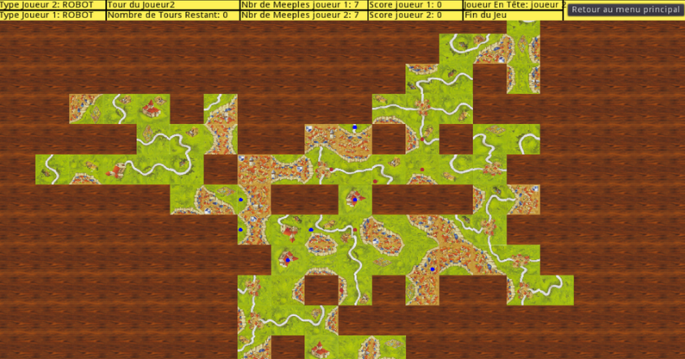
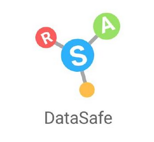
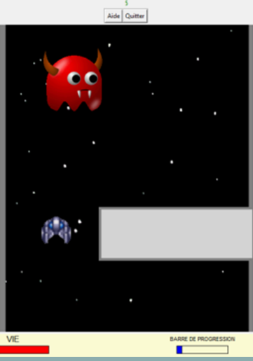

Je suis Taariq Dedarally et je suis passionné par le domaine du numérique, je possède une formation solide en systèmes d'information et en réseaux. Autonome et adaptable, mon projet est de rejoindre une équipe d'infrastructure pour y engager mes compétences en automatisation, en système et réseau, ainsi qu’en technologies cloud, que je continue d’explorer.
10+ Projets Réalisés
Bac +5 Années d'étude et Titre RNCP Certifié
15+ Langage de Programmation & Technologies
5+ Hackathons & Certifications
Mes Services
De la simple installation de réseaux informatiques à la conception de réseaux virtuels complexes, je couvre un large panel de services informatiques.
Expérience professionnel dans la conception et ingénierie de logiciels dans différents langage de programmation comme C/C++, Python, Java

Formation solide en dépoiement, installation et documentation de réseaux informatiques, sur des technologies comme Cisco, Promox, GNS3, Linux, Windows Server.
Déploiement de VLAN - Active Directory - GPO, mise en place de Firewall avec PFSENSE et analyse de paquet avec Wireshark.
Mes Réalisations Professionnelles
Projets techniques réalisés dans un cadre professionnel et compétitif, couvrant l’analyse des besoins, la conception, la mise en œuvre et la maintenance de solutions informatiques adaptées aux contraintes techniques et opérationnelles.
Naval Group - Ingénieur Concepteur Développeur Logiciel - Stage Stage de 6 mois dans l'industrie Maritime et la Défense sur lequel j'ai développé un générateur de plugins pour le logiciel Wireshark en Python et Lua, afin d’analyser le réseau informatique d’un navire de défense.
Hackathon International organisé par Huawei à Nuremberg Projet en équipe de 3 personnes, qui consiste à optimiser le coût financier d’une batterie BESS en Python - simulation de charge/décharge et évaluation ROI par pays. ➜ Lien du projet
Hackathon organisé par XPR Ledger à Paris Participation au Hackathon XPR Ledger à Paris autour de la blockchain et du smart contract. L'objectif du projet était de vérifier la véracité kilométrique d'une véhicule avec une application web ➜ Lien du projet
Projets Réalisés
Sélection de projets mettant en œuvre des compétences avancées en réseaux, systèmes et développement.
-
Projet DuckStore - HomeLab (Projet en continue)
Je possède une maquette où j’implémente des outils professionnels en système et réseau.
-
Hackathon Root-Me
Hackathon sur les outils de sécurités sur la plateforme Root-Me.
-
Projet de Travail d’Étude et de Recherche (TER) IA
Implémentation d’un jeu de société en C++ pour développer une IA et y faire une analyse d’optimisation et de graphe. Démo jouable en ligne : Lien Web Carcassonne
Capture d'écran
 -
Implémentation de l'algorithme RSA
Développement de l'algorithme RSA en langage C en équipe de 8 personnes. Lien du projet
Capture d'écran
C++ -
Projet Space Adventure
Premier projet en groupe codé en Python et Tkinter d'un jeu consistant à éviter des obstacle à bord d'un vaisseau spatiale. Lien du projet
Capture d'écran

Diplômes et Certifications
Certifications professionnelles validant mes compétences en réseau, systèmes et cloud.
RNCP Administrateur Systèmes Réseaux Cloud - IPI Formation sur la mise en place d'outils professionnels pour l'installation, le déploiement, virtualisation et la maintenance de structures réseaux infomatique.
Master en Ingénierie des Réseaux et des Systèmes - Paris Saclay Formé au sein d'un grand pôle scientifique français, j'ai acquis des compétances solides en Réseaux et Systèmes Informatique. Que ce soit de la mise en place d'architecture, d'optimisation et de conceptions théorique, j'ai acquis une grande rigueur scientifique et critique.
Licence Informatique Fondamentale Licence sur les fondamentaux scientifique informatique
Me contacter
Une question, un projet ou une opportunité ? N’hésitez pas à me contacter.
- Email taariq.deda@gmail.com
- Github https://github.com/dytq
- Linkedlin https://www.linkedin.com/in/tq-dy/